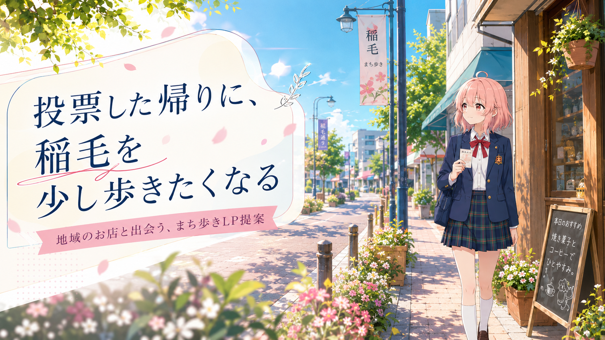
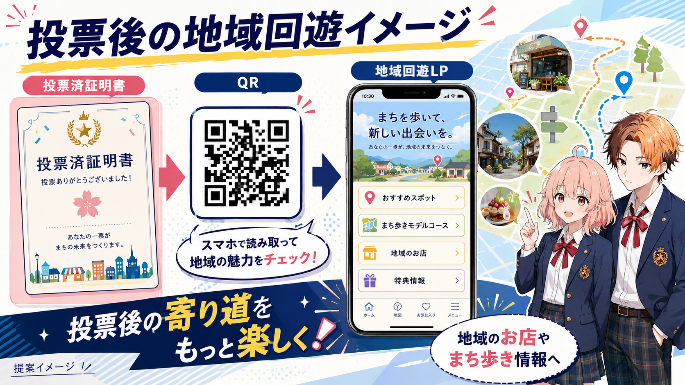
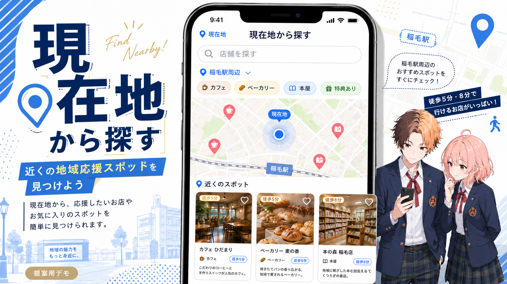
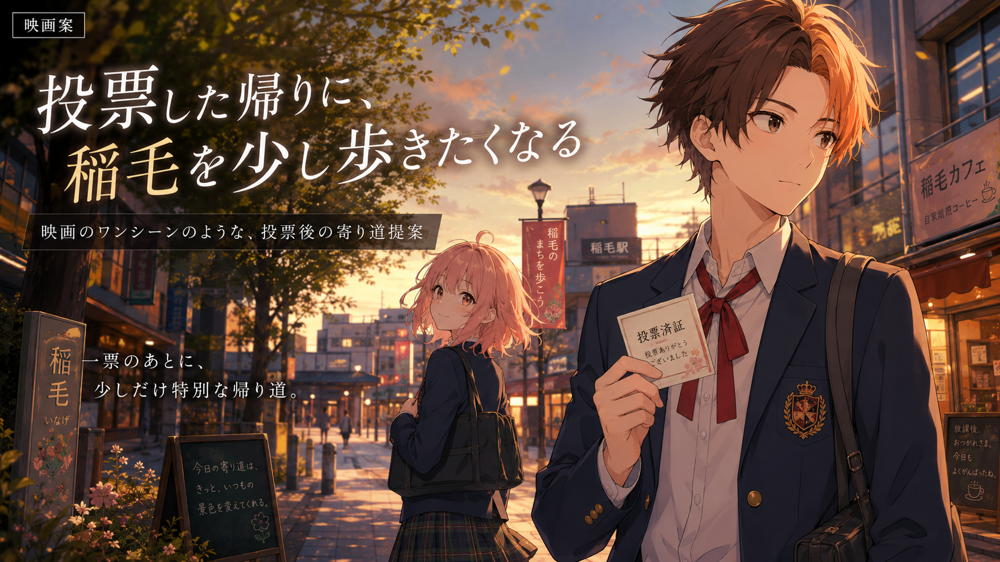

寄り道を生む
投票所からの帰り道に、少し歩いてみたくなる理由をつくります。

いなげ若者選挙プロジェクト 提案資料
投票済証明書・QR・地域回遊LPの提案
割引券企画ではなく、投票後のまち歩きを生む地域回遊LP提案です。
投票したあと、稲毛の街へ自然に足が向く導線をつくる。
主役は「割引」ではありません。投票後の寄り道、地域のお店との接点、 若者が選挙を身近に感じるきっかけを、LPとビジュアルで提案します。
投票所からの帰り道に、少し歩いてみたくなる理由をつくります。
カフェ、本屋、雑貨店など、街の応援スポットを見つけやすくします。
投票を「その日の体験」へつなげ、若者にとって記憶に残る接点にします。
割引・特典は地域応援の一部として控えめに扱います。 メインの価値は 投票後の寄り道と、まちとの出会い です。
投票済証明書から、QR・看板・LPを通じて地域のお店へつなげます。

証明書や看板から、投票後に見返せる導線を用意します。
現在地、駅周辺、ジャンルから地域応援スポットを探せます。
投票帰りの寄り道が、地域のお店との接点になります。
QR掲載は提案要素です。掲載できない場合でも、LP単体で地域回遊サイトとして成立します。
スマホで、近くの地域応援スポットを見つける画面提案です。
実装済みではなく、フロントデザイン提案として見せるLP画面です。 「現在地から探す」「稲毛駅周辺から探す」「ジャンルで探す」を入口に、 投票後の寄り道先を見つけやすくします。
画面内の距離や店舗情報は、採用後に実データへ置き換える想定です。

地域応援スポットを、スマホでも読みやすいカードで見せます。
カフェ
投票帰りにひと息。窓際で稲毛の街を眺められる小さなカフェ。
ベーカリー
焼きたての香りに誘われて、帰り道のおやつを選べるお店。
本屋
一冊との出会いを、投票後の寄り道の記憶に変えます。
雑貨屋
小さな見つけものを楽しめる、眺めるだけでも入りやすい場所。
飲食店
地元野菜の昼ごはん。投票後の時間を少し豊かにします。
古着屋
掘り出しものを探す時間も、街を歩く楽しみになります。
掲載店舗はすべて架空のサンプルです。実在店舗・実装済みサービスではありません。 店舗データ・位置情報は本採用後に実装予定です。

投票後の帰り道を、少し特別なワンシーンとして見せる。
青春映画ポスター風のトーンで、若者の印象に残りやすい案です。 感情に訴えるビジュアルで、投票後の一日を物語のように見せます。
証明書本体は読みやすさを優先し、映画的な世界観はLP・看板で強く見せる想定です。

明るい午後のまち歩きから、地域のお店へ自然につながる。
親しみやすく、行政案件としても説明しやすい案です。 稲毛を歩く楽しさと、地域回遊LPとの相性のよさを素直に見せます。
証明書・LP・店舗カードまで同じ空気感でつなげやすく、提案全体をまとめやすいトーンです。
どちらかを勝たせる比較ではなく、ビジュアルトーンの並列提案として見せます。
映画案シネマチックで情緒的。発表時の印象に残りやすい。
町並み案明るく親しみやすい。地域企画として受け入れられやすい。
映画案感情に強く残り、投票後の一日を特別に見せられる。
町並み案身近で入りやすく、実際の寄り道行動につなげやすい。
映画案魅力は強いが、証明書ではトーンと情報量の調整が必要。
町並み案地域応援の説明と相性がよく、公共性を保ちやすい。
映画案世界観で引き込み、看板や記事ページで映える。
町並み案店舗カードや現在地検索UIと自然につながる。
映画案余白を確保すれば印象的。文字量の整理が重要。
町並み案必須情報を読みやすく置きやすく、安定して見せられる。
両案とも、全体コンセプト・LP構成・QRの扱い・地域応援を主役にする方針は共通です。 変えるのは主にビジュアルトーンです。
いなげ若者選挙プロジェクト